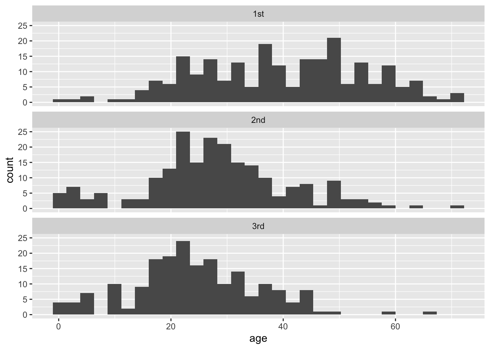

Labs using R: UBC Edition
Lab
10. ANOVA
This lab is part of a series designed for BIOL 300, based on The Analysis of Biological Data. The rest of the labs can be found here.
Learning outcomes
Use R to perform analysis of variance (ANOVA) to compare the means of multiple groups.
Perform Tukey-Kramer tests to look at unplanned contrasts between all pairs of groups.
Use Kruskal-Wallis tests to test for difference between groups without assumptions of normality.
If you have not already done so, download the
zip file containing Data, R scripts, and other resources for these
labs. Remember to start RStudio from the ABDLabs.Rproj
file in that folder to make these exercises work more seamlessly.
Learning the tools
For the examples in this lab, we will again return to the Titanic data set. We’ll group passengers by the passenger class they travelled under (a categorical variable) and ask whether different passenger classes differed in their mean age (a numerical variable).
First, load the data.
Let’s first look at the data to get a sense of how well it fits the
assumptions of ANOVA. Multiple histogram are useful for this purpose. As
we saw in the last lab, we can use ggplot() and facets to
make this plot:
library(tidyverse)
ggplot(titanicData, aes(x = age)) +
geom_histogram() +
facet_wrap(~ passenger_class, ncol = 1) 
These data look sufficiently normal and with similar spreads that ANOVA would be appropriate.
To confirm these visual impressions, it would be useful to construct
a table of the means and standard deviations of each group. There are
numerous ways to do this in R, but one of the neatest is to the
group_by() function from the package dplyr.
This package is among those contained in the metapackage
tidyverse, so we should already be good to go.
group_by()
The package dplyr has several useful features for
manipulating data sets. For our current purposes, we will find two
functions particularly useful: group_by() and
summarize(). These two functions are well named and work
together well, first to organize the data by groups, and second to
summarize the results for each group.
First, use group_by() to organize your data frame by the
appropriate grouping variable. For example, here we want to organize the
titanicData by passenger_class:
## # A tibble: 1,313 × 7
## # Groups: passenger_class [3]
## passenger_class name age embarked home_destination sex survive
## <fct> <fct> <dbl> <fct> <fct> <fct> <fct>
## 1 1st Allen,Mi… 29 Southam… StLouis,MO fema… yes
## 2 1st Allison,… 2 Southam… Montreal,PQ/Che… fema… no
## 3 1st Allison,… 30 Southam… Montreal,PQ/Che… male no
## 4 1st Allison,… 25 Southam… Montreal,PQ/Che… fema… no
## 5 1st Allison,… 0.917 Southam… Montreal,PQ/Che… male yes
## 6 1st Anderson… 47 Southam… NewYork,NY male yes
## 7 1st Andrews,… 63 Southam… Hudson,NY fema… yes
## 8 1st Andrews,… 39 Southam… Belfast,NI male no
## 9 1st Appleton… 58 Southam… Bayside,Queens,… fema… yes
## 10 1st Artagave… 71 Cherbou… Montevideo,Urug… male no
## # ℹ 1,303 more rowsThere are a couple subtle changes here. Firstly,
group_by() converts data frames into tibbles, as indicated
in the first row of the output. You may recall from Lab 2 that tibbles
and data frames are essentially the same thing, though there may be some
minor aesthetic differences in how they are presented (tibbles have a
much neater printed output) and some distinctions in how R handles
things behind the scenes. The 1,313 × 7 in the first line
conveys that there are 1313 rows and 7 columns, which can also be handy
info.
Secondly, the second row now indicates
Groups: passenger_class [3], which shows that R correctly
grouped the titanicData by passenger_class,
which itself has 3 distinct levels. This is what the
group_by() function intrinsically does; converting the data
frame into a tibble is just an added bonus. Ensuring our data are
grouped is important to the next step: summarizing the data by
group.
summarize()
After applying group_by() to a data frame or tibble, we
can summarize the data using summarize(). With
summarize(), we can apply any type of function that
summarizes data (e.g. mean(), median(),
var(), etc.), and receive that summary group by group. For
example, to calculate the mean age of each passenger_class,
we can use:
## # A tibble: 3 × 2
## passenger_class group_mean
## <fct> <dbl>
## 1 1st 39.7
## 2 2nd 28.3
## 3 3rd 24.5As input, we give the name of the grouped table created by
group_by() and the function we want to apply to each group.
In this case we used mean(age, na.rm=TRUE).
group_mean” is a name we give to that summary variable (it
could have been any name we wanted). The output is a tibble that
includes the names of the groups being summarized.
We can give summarize() many summary functions at once,
and it will create columns in the output table for each one. For
example, if we want to output both the mean and the standard deviation,
we can add sd = sd(age, na.rm = TRUE) to the function
above. Adding line breaks between arguments helps with readability.
summarize(titanic_by_passenger_class,
group_mean = mean(age, na.rm = TRUE),
group_sd = sd(age, na.rm = TRUE)
)## # A tibble: 3 × 3
## passenger_class group_mean group_sd
## <fct> <dbl> <dbl>
## 1 1st 39.7 14.9
## 2 2nd 28.3 13.0
## 3 3rd 24.5 11.3Note that the standard deviations are very similar, which means that these data fit the equal variance assumption of ANOVA.
ANOVA
Analysis of variance (or ANOVA) is not quite as simple in R as one
might hope. Doing ANOVA takes at least two steps. First, we fit the
ANOVA model to the data using the function lm(). This step
carries out a bunch of intermediate calculations. Second, we use the
results of first step to do the ANOVA calculations and place them in an
ANOVA table using the function anova(). The function
name lm() stands for “linear model”; this is actually a
very powerful function that allows a variety of calculations. One-way
ANOVA is a type of linear model.
lm()
The function lm() needs a formula and a data frame as
arguments. The formula is a statement specifying the “model” that we are
asking R to fit to the data. A model formula always takes the form of a
response variable, followed by a tilde (~), and then at
least one explanatory variable. In the case of a one-way ANOVA, this
model statement will take the form
numerical_variable ~ categorical_variable.
For example, to compare differences in mean age among passenger
classes on the Titanic, this formula is
age ~ passenger_class. This formula tells R to “fit” a
model in which the ages of passengers are grouped by the variable
passenger_class.
The name of the data frame containing the variables stated in the
formula is the second argument of lm(). Finally, to
complete the lm() command, it is necessary to save the
intermediate results by assigning them to a new object, which
anova() can then use to make the ANOVA table. For example,
here we assign the results of lm() to a new object named
titanicANOVA:
anova()
The function anova() takes the results of
lm() as input and returns an ANOVA table as output:
## Analysis of Variance Table
##
## Response: age
## Df Sum Sq Mean Sq F value Pr(>F)
## passenger_class 2 26690 13344.8 75.903 < 2.2e-16 ***
## Residuals 630 110764 175.8
## ---
## Signif. codes: 0 '***' 0.001 '**' 0.01 '*' 0.05 '.' 0.1 ' ' 1This table shows the results of a test of the null hypothesis that the mean ages are the same among the three groups. The P-value is very small, and so we reject the null hypothesis of no differences in mean age among the passenger classes.
Tukey-Kramer test
A single-factor ANOVA can tell us that at least one group has a
different mean from another group, but it does not inform us which group
means are different from which other group means. A Tukey-Kramer test
lets us test the null hypothesis of no difference between the population
means for all pairs of groups. The Tukey-Kramer test (also known as a
Tukey Honest Significance Test, or Tukey HSD), is implemented in R in
the function TukeyHSD().
We will use the results of an ANOVA done with lm() as
above, that we stored in the variable titanicANOVA. To do a
Tukey-Kramer test on these data, we need to first apply the function
aov() to titanicANOVA, and then we need to
apply the function TukeyHSD to the result. We can do this
in a single command:
## Tukey multiple comparisons of means
## 95% family-wise confidence level
##
## Fit: aov(formula = titanicANOVA)
##
## $passenger_class
## diff lwr upr p adj
## 2nd-1st -11.367459 -14.345803 -8.389115 0.0000000
## 3rd-1st -15.148115 -18.192710 -12.103521 0.0000000
## 3rd-2nd -3.780656 -6.871463 -0.689849 0.0116695The key part of this output is the table at the bottom. It estimates
the difference between the means of groups (for example, the 2nd
passenger class compared to the 1st passenger class) and calculates a
95% confidence interval for the difference between the corresponding
population means. (lwr and upr correspond to
the lower and upper bounds of that confidence interval for the
difference in means.) Finally, it give the P-value from a test
of the null hypothesis of no difference between the means (the column
headed with p adj). In the case of the Titanic data,
P is less than 0.05 in all pairs, and we therefore reject every
null hypothesis. We conclude that the population mean ages of all
passenger classes are significantly different from each other.
Kruskal-Wallis test
A Kruskal-Wallis test is a non-parametric analog of a one-way ANOVA. It does not assume that the variable has a normal distribution. (Instead, it tests whether the variable has the same distribution with the same mean in each group.)
To run a Kruskal-Wallis test, use the R function
kruskal.test(). The input for this function is the same as
we used for lm() above. It includes a model formula
statement and the name of the data frame to be used.
##
## Kruskal-Wallis rank sum test
##
## data: age by passenger_class
## Kruskal-Wallis chi-squared = 116.08, df = 2, p-value < 2.2e-16You can see for the output that a Kruskal-Wallis test also strongly rejects the null hypothesis of equality of age for all passenger class groups with the Titanic data.
R commands summary

Activities & Questions
Make a script in RStudio that includes all your R code to answer the
following questions. Include answers to all questions below using
comments.
1. The European cuckoo does not look after its own eggs, but
instead lays them in the nests of birds of other species. Previous
studies showed that cuckoos sometimes have evolved to lay eggs that are
colored similarly to the host bird species’ eggs. Is the same true of
egg size – do cuckoos lay eggs similar in size to the size of the eggs
of their hosts? The data file cuckooeggs.csv contains data
on the lengths of cuckoo eggs laid in the nests of a variety of host
species. Here we compare the mean size of cuckoo eggs found in the nests
of different host species.
Plot a multiple histogram showing cuckoo egg lengths by host species.
Calculate a table that shows the mean and standard deviation of length of cuckoo eggs for each host species.
Look at the graph and the table. For these data, would ANOVA be a valid method to test for differences between host species in the lengths of cuckoo eggs in their nests?
Use ANOVA to test for a difference between host species in the mean size of the cuckoo eggs in their nests. What is your conclusion?
Assuming that ANOVA rejected the null hypotheses of no mean differences, use a Tukey-Kramer test to decide which pairs of host species are significantly different from each other in cuckoo egg mean length. What is your conclusion?
2. The pollen of the maize (corn) plant is a source of food to
larval mosquitoes of the species Anopheles arabiensis, the main
vector of malaria in Ethiopia. The production of maize has increased
substantially in certain areas of Ethiopia recently, and over the same
time period, malaria has entered in to new areas where it was previously
rare. This raises the question, is the increase of maize cultivation
partly responsible for the increase in malaria?
One line of evidence is to look for an association between maize
production and malaria incidence at different geographically dispersed
sites (Kebede et al. 2005). The data set
malaria vs maize.csv contains information on several
high-altitude sites in Ethiopia, with information about the level of
cultivation of maize (low, medium or high in the variable
maize_yield) and the rate of malaria per 10,000 people
(incidence_rate_per_ten_thousand).
Plot a multiple histogram to show the relationship between level of maize production and the incidence of malaria.
ANOVA is a logical choice of method to test differences in the mean rate of malaria between sites differing in level of maize production. Calculate the standard deviation of the incidence rate for each level of maize yield. Do these data seem to conform to the assumptions of ANOVA? Describe any violations of assumptions you identify.
Compute the log of the incidence rate and redraw the multiple histograms for different levels of maize yield. Calculate the standard deviation of the log incidence rate for each level of maize yield. Does the log-transformed data better meet the assumptions of ANOVA than did the untransformed data?
Test for an association between maize yield and malaria incidence.
3. Animals that are infected with a pathogen often have
disturbed circadian rhythms. (A circadian rhythm is an endogenous daily
cycle in a behavior or physiological trait that persists in the absence
of time cues.) Shirasu-Hiza et al. (2007) wanted to know whether it was
possible that the circadian timing mechanism itself could have an effect
on disease. To test this idea they sampled from three groups of fruit
flies: one “normal”, one with a mutation in the timing gene
tim01, and one group that had the tim01 mutant in a
heterozygous state. They exposed these flies to a dangerous bacteria,
Streptococcus pneumoniae, and measured how long the flies lived
afterwards, in days. The date file
circadian mutant health.csv shows some of their data.
Plot a histogram of each of the three groups. Do these data match the assumptions of an ANOVA?
Use a Kruskal-Wallis test to ask whether lifespan differs between the three groups of flies.